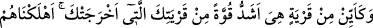
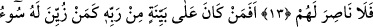
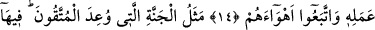
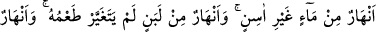
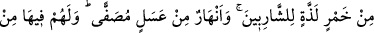
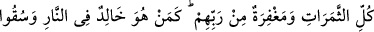
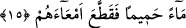
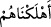

MÜTTAKÎLERE VAADOLUNAN
CENNETİN DURUMU
13. Seni (içinden) çıkarmış olan şehirden daha kuvvetli nice şehir var ki biz onları
yok ettik de onlara yardım eden çıkmadı.
14. Rabbinden bir delîl üzerinde bulunan insan, kötü işi kendilerine süslendirilen
ve keyiflerine uyan kimseler gibi olur mu? (Olmaz elbet).
15. (Şirkten, günâhlardan) korunanlara söz verilen cennetin durumu şudur:
İçinde bozulmayan su ırmakları, tadı değişmeyen süt ırmakları, içenlere lezzet
veren şarap ırmakları ve süzme bal ırmakları vardır. Onlar için orada her çeşit
meyva, Rablerinden de bağışlama vardır. (Şimdi bu ni‘metler içinde yaşayanlar)
ateşte ebedî kalan ve barsaklarını parça parça kesen sıcak suyun içirildiği kimseler
gibi olur mu?
“Seni (içinden) çıkarmış olan şehirden” Mekke’den, Mekke halkından “daha
kuvvetli nice şehir” halkı “var ki biz onları yok ettik de” azaptan kurtulmaları için
“onlara yardım eden çıkmadı.”
Peygamberimiz (s.a.)’in çıkarıldığı şehir, Mekke’dir. Burada her iki “karye”
kelimesinden de muzaf olan “ehl” kelimesi hazfedilmiş, muzafın irab hükmü karye
kelimelerine icrâ edilmiştir. Haber olan
(ehleknâhüm: biz onları helâk ettik)
ifâdesi de bu durumu beyân etmektedir. (Zira helâk edilenler, şehirler değil şehirlerin
halkıdır.)
“Onları yok ettik de onlara yardım eden çıkmadı.” Yâni senin aralarından çıkmana
sebep olan şehir halkından daha kuvvetli olan nice şehir halkını biz helâk etmişizdir.
Birinci şehri çok kuvvetli olarak nitelemek, ikinci şehir zayıf olduğu için bunun